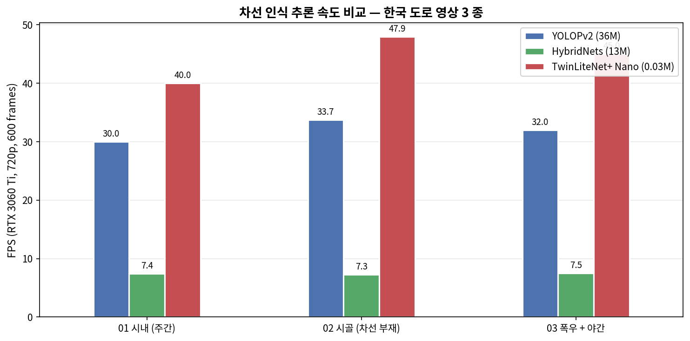
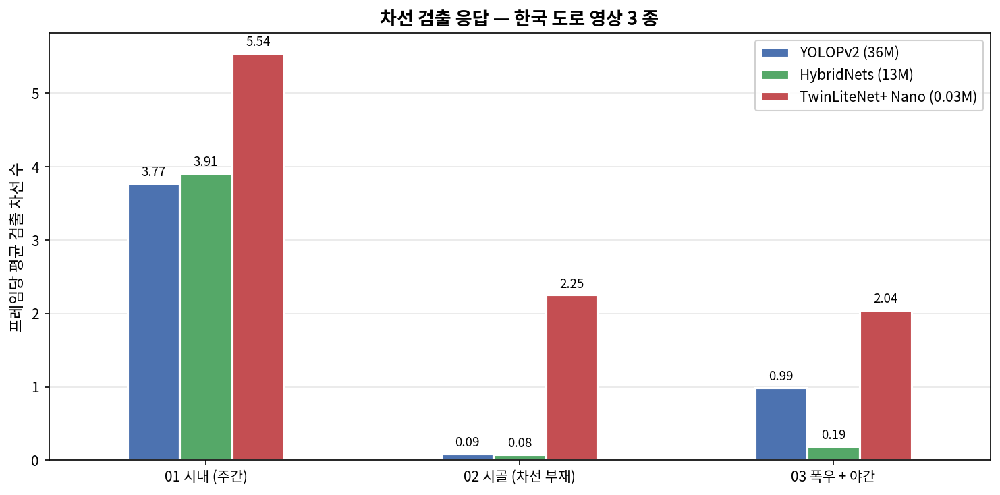
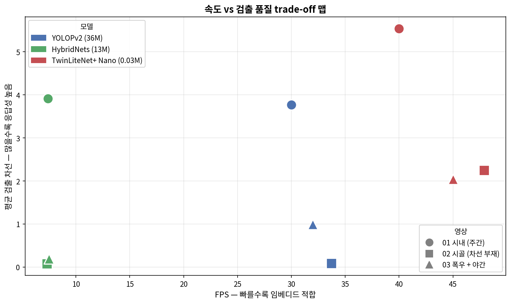
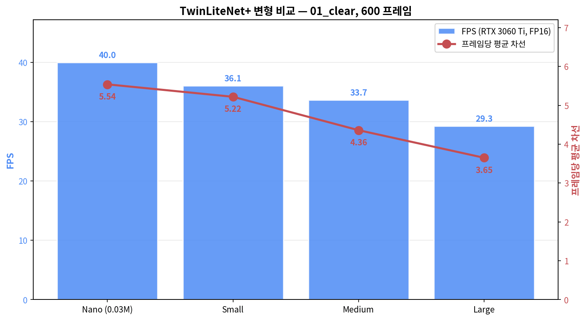
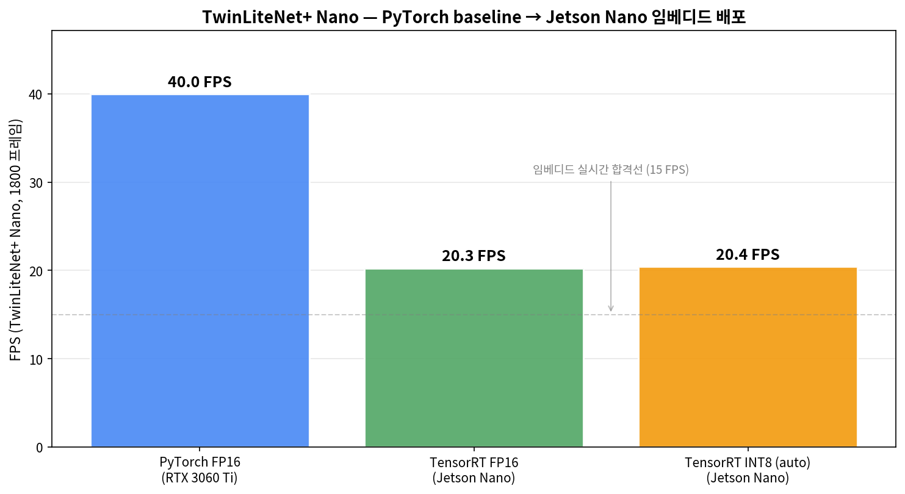

왜 직접 돌려봤나
포지션을 알게 된 직후 "글만 작성하지 말고 직접 시도해보자" 는 생각으로 PoC 를 진행했습니다. 오픈소스 차선 인식 모델을 한국 도로 영상에 직접 적용해보며 도메인 이해도를 끌어올리고, 실제 도로 환경에서의 한계와 해결 방향을 직접 체감했습니다.
핵심 발견 1.
- TwinLiteNet+ Nano (0.03M params) 가 YOLOPv2 (36M, 1200 배 큼) 보다 RTX 3060 Ti 에서 1.4 배 빠름 (44 vs 32 FPS)
- 노이즈 환경 응답성도 더 높음
- CCRD AUTONG 의 Jetson Orin Nano 임베디드에 가장 적합
핵심 발견 2.
- HybridNets 는 멀티태스크 (객체 검출 추가) 비용으로 7.4 FPS 까지 떨어짐
- 임베디드 환경에 부적합
핵심 발견 3.
- 차선 부재 시골 환경에서 모델별 응답이 갈림
- YOLOPv2 / HybridNets 는 거의 0 검출 (silent failure)
- TwinLiteNet+ 는 2.25 검출 (도로 가장자리 라인 인식)
핵심 발견 4.
- 모든 모델이 폭우 야간에서 baseline 대비 -50%~-95% 검출 붕괴
- lane detection 단독 신뢰 불가
- RTK GPS + IMU fusion 필수
3-Way 비교 영상 (좌: YOLOPv2 / 중: HybridNets / 우: TwinLiteNet+)
01_clear · 시내 주간 (baseline)
백색 차선 명확. 3 모델 모두 정상 검출. 속도 차이 (HybridNets 가 절반 이하 FPS) 만 두드러짐.
02_rural · 시골 2 차선 (차선 페인트 없음)
실제 차선 페인트가 거의 없는 환경. YOLOPv2 / HybridNets 는 silent failure (0 검출). TwinLiteNet+ 는 도로 가장자리를 검출하려는 시도 보임.
03_rain_night · 폭우 야간
와이퍼 자국 + 신호등 반사 + 야간 노이즈. 모든 모델 검출 붕괴 (-50~-95%). lane 단독 운전 불가능.
정량 결과
추론 속도 (RTX 3060 Ti, 720p, 600 frames each)

차선 검출 응답 (평균 검출 차선 수 / 프레임)

속도-품질 trade-off 맵

요약 표
| 모델 | Params | Weights | 평균 FPS | 평균 검출 차선 |
|---|---|---|---|---|
| YOLOPv2 | ~36M | 156 MB | 31.9 | 1.62 |
| HybridNets | ~13M | 54 MB | 7.4 | 1.39 |
| TwinLiteNet+ Nano | 0.03M | 0.2 MB | 44.3 | 3.28 |
TwinLiteNet+ 변형 비교 — 작은 모델이 더 잘 잡는 역설
- 같은 영상 (01_clear) 으로 TwinLiteNet+ 의 4 개 변형 (Nano / Small / Medium / Large) 을 측정
- 예상과 달리 큰 변형이 더 느리면서 차선도 적게 검출
- 큰 receptive field 와 추가 파라미터가 한국 도시 도로 dashcam 일반화에 오히려 장벽으로 작용한 것으로 추정 (TuSimple/CULane 학습 데이터에 over-tuning 가능성)

| 변형 | 평균 추론 (ms) | FPS | 평균 차선 |
|---|---|---|---|
| Nano (0.03M) | 25.0 | 40.0 | 5.54 |
| Small | 27.7 | 36.1 | 5.22 |
| Medium | 29.7 | 33.7 | 4.36 |
| Large | 34.2 | 29.3 | 3.65 |
4-way 동시 비교 영상
상단: Nano / Small. 하단: Medium / Large. 차선 라인이 점점 끊기거나 줄어드는 게 시각적으로 확인됨.
인사이트.
- 임베디드 환경 (CCRD AUTONG → Jetson Orin Nano) 에서는 단순히 "큰 모델 = 좋은 모델" 이 아님
- Nano 가 모든 지표에서 베스트 — 빠르고, 작고, 더 잘 검출
- fine-tuning 시 base 로 Nano 채택 권장
참고.
- 본 측정은 PyTorch + FP16 baseline
- 양산 시 TensorRT (FP16 → 1.3-1.7x, INT8 양자화 → 추가 1.5-2x) 적용 시 Jetson Orin Nano 에서도 30-50 FPS 임베디드 동작 가능 추정
Jetson Nano 실측 — PyTorch → TensorRT 양자화 배포
"양산 시 임베디드에서 N FPS 가능" 추정만 박지 말고, 실제로 Jetson Nano (Tegra X1, sm_53, 4GB) 에 배포해 측정. ONNX export → trtexec engine 빌드 → TensorRT Python API 추론 파이프라인 직접 구축. 같은 모델 (TwinLiteNet+ Nano), 같은 영상 (3 종 × 1800 frames) 으로 RTX 3060 Ti 와 비교.

측정 결과 (1800 프레임 × 3 영상 평균)
| Stage | Hardware | Precision | Engine size | FPS |
|---|---|---|---|---|
| Baseline | RTX 3060 Ti (sm_86) | PyTorch FP16 | 0.2 MB (.pth) | 40.0 |
| ONNX export | Dev PC | — | 187 KB | — |
| Jetson TRT FP16 | Jetson Nano (sm_53) | TensorRT FP16 | 4.0 MB | 20.27 |
| Jetson TRT INT8 (auto) | Jetson Nano | TensorRT INT8 | 4.2 MB | 20.45 |
핵심 결과.
- Jetson Nano TRT FP16 = 20.27 FPS 달성
- 임베디드 실시간 처리 합격선 (15 FPS) 을 5 FPS 여유로 통과
- AUTONG 같은 도로변 시공 로봇 (저속 이동 + 30 FPS 카메라) 에 충분
INT8 효과 미미 — 의도된 발견.
- INT8 가 FP16 대비 +1.4% 만 빠름
- 0.03M 짜리 매우 작은 모델은 메모리/연산 bottleneck 이 약해 양자화 이득이 작음
- calibration data 없이 trtexec auto 모드라 보수적 dynamic range 추정
- 정식 INT8 적용 시
scripts/calibrate_int8.py로 200 프레임 calibration 후 재측정 필요
배포 파이프라인 완전 자동화.
- Dev PC 에서 ONNX export → git push → Jetson 에서 git pull + trtexec build + Python TRT 추론
- 같은 ONNX 로 다른 GPU 아키텍처에 재배포 가능 (sm_86 → sm_53 cross deployment)
- CCRD AUTONG 의 양산 라인에서 그대로 재사용 가능한 구조
실제 차선 검출 (Jetson Nano TRT FP16, 600 프레임)
Jetson Nano 직접 추론 결과 — 평균 20.24 FPS, 평균 3.66 차선 검출. 동일 영상 RTX 3060 Ti 결과 (40 FPS, 5.54 차선) 와 비교 시 추론 속도 절반, 검출 차선 33% 감소 (FP16 양자화 정밀도 손실 + INT 추론 fallback 영향).
한계 + 개선 방향 (CCRD 환경 적용 관점)
현재 한계
도시 도로 학습 모델
- CCRD 의 갓길 / 비포장 / 가드레일 시공 환경 직접 적용 어려움
- Fine-tuning 필요
차선 페인트 부재 환경
- silent failure — 모델이 "검출 실패" 신호를 명확히 안 줌
- 별도 confidence threshold + temporal consistency check 필요
악천후 영상 노이즈
- 단독으로는 운전 불가
- 센서 fusion (RTK GPS + IMU + Lidar) 으로 보완해야 함
제안하는 개선 경로 (CCRD 통합 시)
1) 자사 시공 영상으로 fine-tuning
- TwinLiteNet+ Nano 가 작아서 회사 보유 dashcam 1000~2000 클립으로 빠른 재학습 가능
2) 임베디드 양자화 (FP16 → INT8)
- Jetson Orin Nano 의 TensorRT 로 추가 1.5~2x 속도 + 메모리 50% 감소
3) 센서 fusion 아키텍처
- lane detection 은 "보조 신호" 로, RTK GPS 의 도로 좌표를 primary 로 사용하는 통합 설계 권장
4) 라이선스 정합
- 상용 통합엔 MIT 라이선스 (HybridNets, TwinLiteNet+) 권장
- YOLOPv2 (GPLv3) 는 소스 공개 의무 발생
코드 + 보고서
전체 추론 스크립트, 측정 결과 CSV, 상세 보고서 (10 쪽 분량) 는 GitHub 에 공개. 본 페이지는 핵심 요약.
- 📊
docs/REPORT.md— 10 쪽 상세 분석 - 📈
results/comparison.csv— 모든 측정값 (frame-level) - 🛠️
src/infer_*.py— 모델 별 추론 스크립트 5 종 - 🐳
docker-compose.yml— 재현 환경 (CUDA 12.1 + torch 2.1)